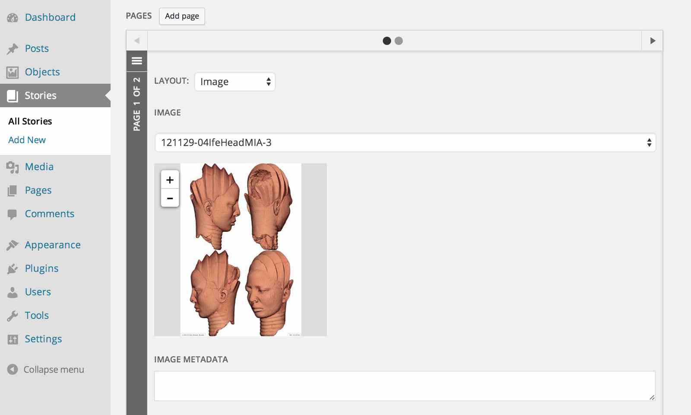
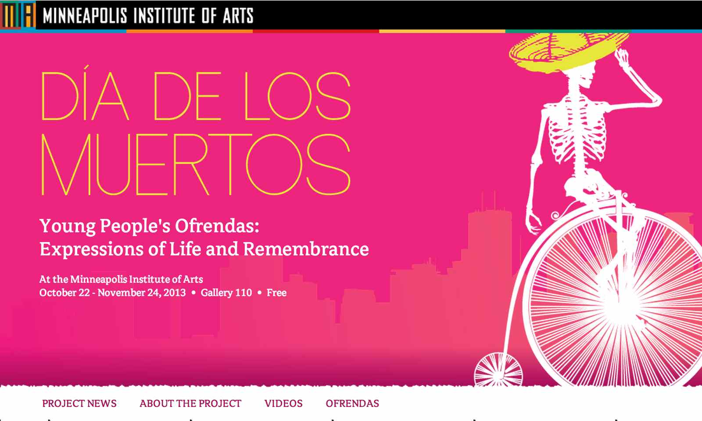
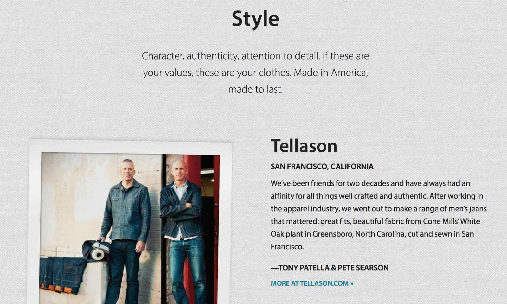
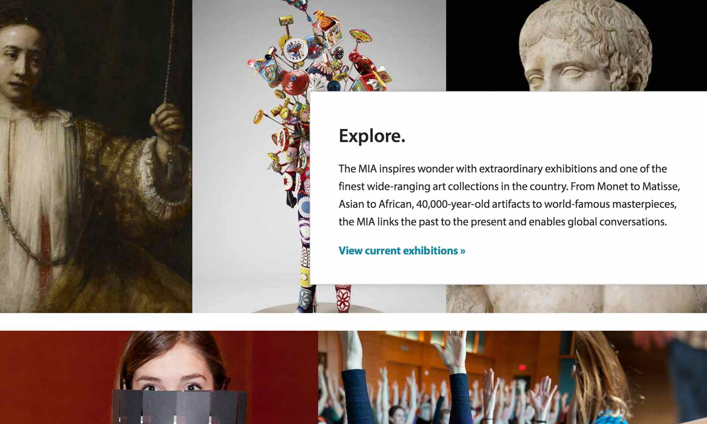
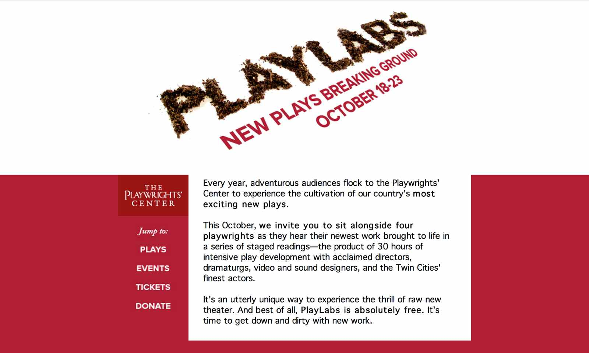
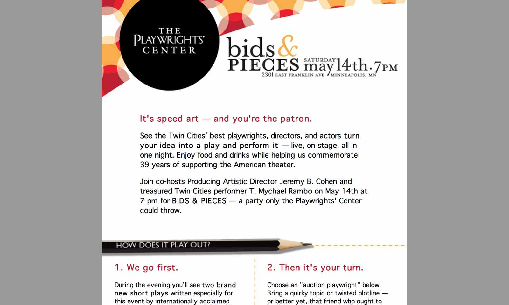
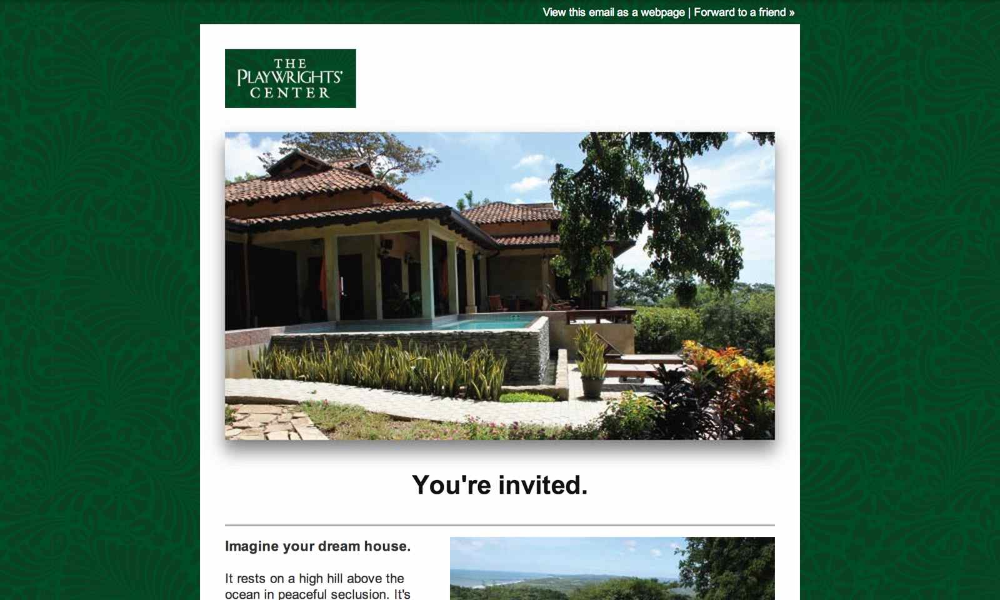
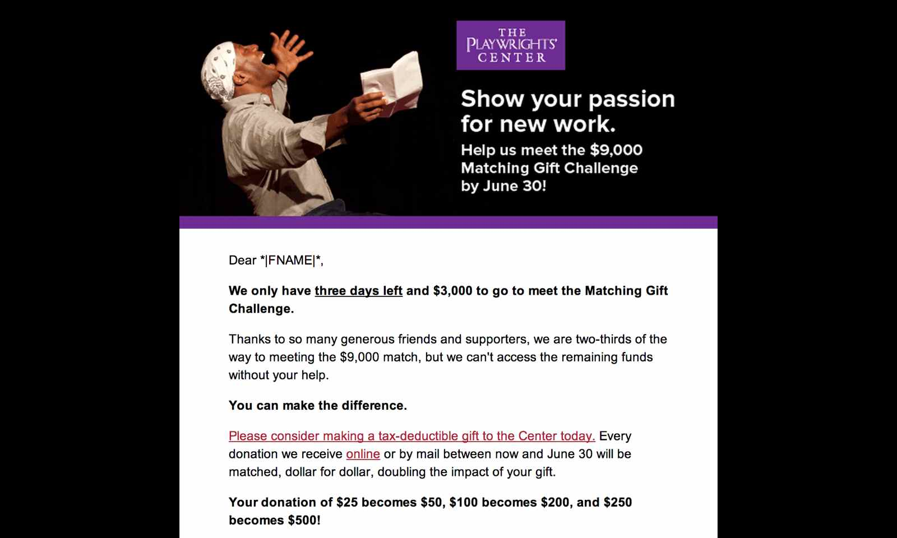
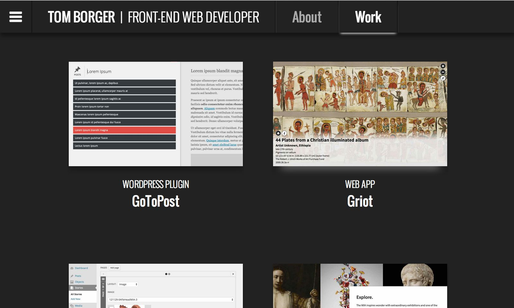

https://github.com/artsmia/griot/tree/skeleton
A major collaborative effort by the Minneapolis Institute of Arts web team, Griot is an AngularJS application originally built as an iPad-optimized in-gallery experience for the museum's African galleries in 2013. Since then, the MIA web team has converted the tool to a responsive layout so that patrons can browse content on their own devices, and has been working to open-source the project so it can be adopted (and adapted) by other organizations.

WordPress / Angular / CSS / Design
GriotWP
https://github.com/artsmia/GriotWP
GriotWP is a simple and extensible system for loading content into the Minneapolis Institute of Arts' in-gallery multimedia presenter, Griot, which is currently being open-sourced by the MIA web team. GriotWP is almost entirely an AngularJS application, but is wrapped in a WordPress plugin to provide a familiar environment for content authors accustomed to the MIA's multisite network.
In its original form, GriotWP used the WordPress plugin Advanced Custom Fields to facilitate input, but because it relied heavily on ACF's paid extensions (repeater and flexible content fields), it was necessary to completely rewrite the interface for the open-source version of the package. The new version includes an AngularJS-powered reinterpretation of Advanced Custom Fields, allowing users to create new field groups with simple markup. The plugin then automatically organizes and saves content as JSON and exposes it to the Griot application through a custom WordPress endpoint.
WordPress is often used to power large sites and applications with huge collections of records, but this can make locating and editing posts a major pain. The WordPress admin — a large and memory-hogging application which, unlike the front end website, cannot be cached — needs to be reloaded every time the user searches, changes post types, or even pages through records.
GoToPost improves that process by moving it to the client, using a local site manifest and Angular's search and filter tools to jump to any post in the system with just a couple keystrokes. The plugin is built for maximum efficiency. It assembles the manifest without slamming MySQL or the server, stores it locally, and syncs individual records as they change. It also inherits the admin color scheme chosen by the user (including custom schemes).
GoToPost is very much under construction, but should be mostly functional on WordPress 3.8 or above.

WordPress / HTML / CSS / Adaptation
Ofrenda 2013
http://new.artsmia.org/ofrenda-2013
The Young People's Ofrenda project is an annual collaboration between the Minneapolis Institute of Arts and local schools designed to explore the art and traditions of Día de los Muertos. Each year's project is accompanied by a website featuring the students and their work.
The 2013 Ofrenda site is a responsive custom WordPress theme that is based on the project poster and makes heavy use of custom post types and taxonomies. This simplified the formerly laborious process of creating and organizing pages representing the work of each student, in each school, for each project phase. It also provided more logical ways to navigate the site — by phase, by school, or by student.

PHP / JS / CSS / Design
Northern Grade
http://new.artsmia.org/northern-grade
This webpage, for a collaboration between the Minneapolis Institute of Arts and menswear market Northern Grade, is one of several MIA web treatments that make use of a modular content system developed as part of the museum's WordPress back-end.
The system allows users to rapidly develop responsive standalone subsites that previously had to be created from scratch. Users can add, arrange, and resize content modules, then style them further with custom CSS, while maintaining a responsive design and a coherent look and feel among subsites.

JS / SASS / Design
About the MIA
http://new.artsmia.org/about
Despite having a trove of amazing photography and a passionate fan base, the MIA's original About page featured no photos, no call to action — in fact, it literally featured almost nothing at all. The new incarnation puts the spotlight on the museum's brand promise, backed up with dynamic, emotional visuals.

HTML Email / Adaptation
PlayLabs Invitation
http://eepurl.com/fWSRP
PlayLabs is the Playwrights' Center's annual festival of new plays - a place where playwrights and audiences can "get their hands dirty" with new work. This email invitation adapts the look and feel designed by creative agency Very, Inc. for the event's print materials.
This email plays with tables to create a hanging-indent look for the content sections, and for those with an email client more spacious than 600px, the banded header adds additional pop to the logo.

HTML Email / Adaptation
Bids and Pieces
http://bit.ly/N2L3Id
This invitation to Bids and Pieces, the Playwrights' Center's annual gala and auction, is an adaptation of a printed invitation booklet designed by creative agency Very, Inc. (The print invitation can be found here.)

HTML Email / Copy / Adaptation
Raffle Promotion
http://eepurl.com/laWUD
For its first annual raffle, the Playwrights' Center offered up 7 days and 6 nights at a board member's private vacation home in Nicaragua. This promotional email invites the recipient to imagine herself in the home and makes use of some of the great photography provided by the board member.

HTML Email / Design
Annual Appeal
http://eepurl.com/naYBD
This simple end-of-year giving campaign positions and reinforces its message with an image from a Playwrights' Center staged reading.

HTML / SASS / JS / Design
tomborger.com
http://github.com/tomborger/tomborger.com
Because everyone loves a little creative constraint, tomborger.com uses no divs in its markup. This is an exercise in semantics in the sense that nothing is less semantic than a div ... and also in the sense that a div is, in fact, created and destroyed by Javascript to vertically center the front page.
Also, however the clip property was originally intended to be used, this site's navigation was probably not it. But it sure was a lot of fun to code.